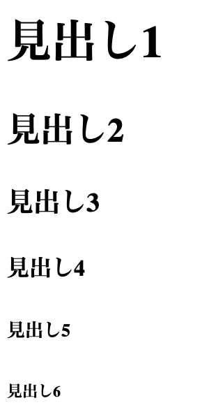

実習ファイルと提出
html13-01.html
取得・提出の案内が表示されないときは、先生に確認してください。
html13-02.html
取得・提出の案内が表示されないときは、先生に確認してください。
- 上のファイル名を確認し、「本人用HTMLを取得」を押します。別画面で自分の学校アカウントを確認し、本人用HTMLを発行してダウンロードします。
- 取得したファイルを、名前を変えずに 書類 → HTML実習 フォルダへ保存します。前の実習のHTMLも同じフォルダに置きます。
- エディタの「フォルダを接続…」でHTML実習フォルダを選び、表示された一覧から今回のHTMLを開きます。
- コードを編集し、プレビュー右上の更新アイコン（⌘Enter）で表示を確認します。上部の「保存」も押し、「Macのファイルに保存しました」の表示を確認します。
- エディタの「提出」→「提出画面を開く」から提出フォームへ進み、保存したHTMLを選んで「提出する」を押します。「提出を受け付けました」の表示まで確認してください。
初めての操作は取得・フォルダ接続・保存の詳しい手順を確認してください。フォルダ未接続時などは保存がダウンロードになるので、保存先・内容・ファイル名をFinderで確認します。
プレビュー更新とファイル保存は別の操作です。配付情報（joho-issued-htmlを含むコメント）は削除・変更しないでください。CotEditorなどで編集した場合は、上の「提出する」から提出フォームを開けます。
確認できた採点項目には ★ が付きます。受付期間内は何回でも修正して再提出できますが、同じ課題の新しい提出は 60秒以上 あけてください。
★はコードの確認結果です。画像が表示されること、リンクが開くこと、見やすさは、自分のブラウザでも確かめてください。
保存・復元で困ったとき
保存に失敗したときは、編集画面を閉じずに先生に相談してください。作業後は HTML実習 フォルダ全体を別の場所にもコピーしておくと、画像もまとめて戻せます。
次回はMacに保存したファイルを開いて続けます。ブラウザの控えは自動では開きません。万が一のときだけ「設定」→「困ったときの復旧」→「ブラウザの控えから復旧…」で選び、復旧した内容をMacへ保存してください。
提出済みのHTMLは、提出画面の「控えを保存」から控えを保存できます。これは提出時点のHTMLだけで、画像や提出後の編集内容は含みません。テンプレートを取り直しても作業途中の内容は復元されないので、編集中のファイルに上書きしないでください。
(1) 見出し
見出しタグ<h1>〜<h6>
見出しには<h1>〜<h6>タグを使います。hは見出しを意味するheadingの略です。h1，h2，h3，h4，h5，h6の６種類のタグがあり、h1が一番大きな見出しで、h2，h3と数字が大きくなるにしたがって見出しのサイズは小さくなります。見出しのレベルによって使い分けをしましょう。
<h1>見出し1</h1>
<h2>見出し2</h2>
<h3>見出し3</h3>
<h4>見出し4</h4>
<h5>見出し5</h5>
<h6>見出し6</h6>

大見出しである<h1>は１ページにつき１回が推奨されていて、そのページのタイトルなどに用いられます。
<h2>を記事のまとまりとしての中見出し，<h3>を小見出しとして使用されることが多いです。さらに必要であれば<h4>をより小さい見出しとして用い、<h5>と<h6>はあまり使われることはありません。
(2) 段落と改行
段落タグ<p>
<p>タグは文章の段落を表します。pは段落を意味するparagraphの略です。<p>〜</p>に囲まれた部分が１つの段落となります。段落と段落の間は改行され、段落間には少しスペースができます。
<p>1段落目の文章</p>
<p>2段落目の文章</p>
<p>3段落目の文章</p>
改行タグ<br>
<br>タグは段落の中で改行するときに使います。brはbreakの略です。改行したい位置で<br>を記述し、終了タグは不要です。
<p>タグがひとまとまりの文章としての段落であるのに対して、<br>タグは閲覧性の見やすさから改行をしたいときや改行前後で段落を変えたくないときに用います。
<p>1段落目の文章をここに書きます。<br>
次の段落にはいかないが、改行したいときに改行タグを使います。</p>
(3) 文字の強調
文章の中で特に重要な語句がある場合、<strong>タグや<em>タグを使って強調します。
<strong>タグ
<strong>タグは重要な語句・内容を示します。多くのブラウザでは、太字で表示されます。
<p>重要な語句には<strong>strongタグ</strong>を使います。</p>
<em>タグ
<em>タグはemphasisの略で、アクセントをつけて強調します。<strong>ほど強く強調しない場合には<em>を使用します。多くのブラウザでは、斜体で表示されます。
<p>strongほど強くはないが、強調したいときには<em>emタグ</em>を使います。</p>
(4) ページの構成
ページの構成
hタグやpタグを使って、１ページのアウトラインは次のような形にすることが推奨されています。
必要に応じてインデント（字下げ）をつけるとソースコードが見やすくなります。インデントは半角スペース２つ分で字下げします。
<h1>Webページ制作の基礎</h1>
<h2>HTMLの基本構造</h2>
<h3>HTMLとは何か</h3>
<p>HTMLはウェブページを作成するための言語です。<br>
主にテキストや画像を表示するために使われます。</p>
<p>ウェブブラウザはHTMLを解釈し、ページの見た目を表示します。</p>
<h3>基本的なタグ</h3>
<p>HTMLには、見出しや段落などを定義するための<strong>タグ</strong>があります。<br>
見出しは<em>h1</em>から<em>h6</em>まであり、段落は<em>p</em>で表されます。</p>
<p>これらのタグを使うことで、ページの構造を作ることができます。</p>
<h3>HTMLファイルの構成</h3>
<p>通常、HTMLファイルは<strong>html</strong>というタグで囲まれます。<br>
その中に<strong>head</strong>タグと<strong>body</strong>タグが含まれます。</p>
<p><strong>head</strong>にはページのタイトルやスタイルなどが、<strong>body</strong>には実際のコンテンツが入ります。</p>
<h2>CSSの基礎</h2>
<h3>CSSとは</h3>
<p>CSSはウェブページのデザインを設定するための言語です。<br>
色やフォント、レイアウトなどを指定することができます。</p>
<p>CSSを使うと、ウェブページの見た目を簡単に変えることができます。</p>
<h3>セレクタとプロパティ</h3>
<p>CSSでは、要素を選んで、そのデザインを指定します。<br>
たとえば、<strong>p</strong>というタグを選んで、文字の色や大きさを設定することができます。</p>
<p>プロパティとしては、色やフォントサイズなどがあります。</p>
<h3>外部スタイルシートの使用</h3>
<p>外部のCSSファイルを使うと、複数のページに同じデザインを適用することができます。</p>
<p>これにより、デザインの管理が簡単になります。</p>